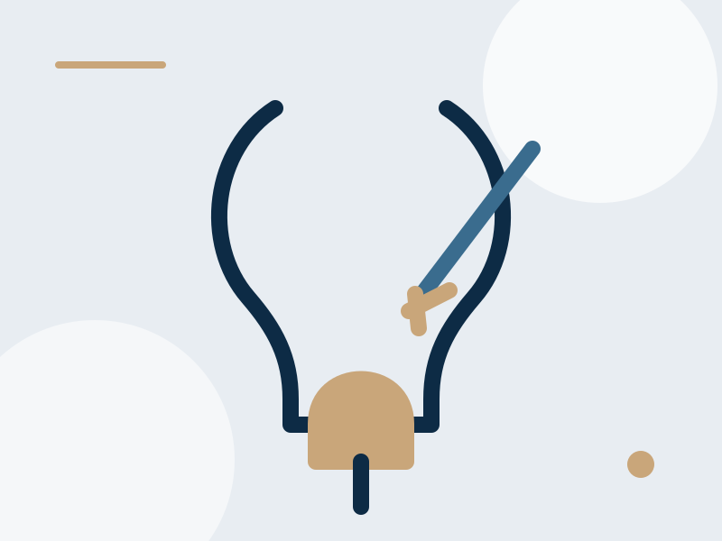

Flujo urinario
Dificultad para orinar
Disminución de la fuerza del chorro urinario o dificultad para iniciar la micción.
Muchos hombres mayores de 50 años presentan dificultad para orinar debido al crecimiento de la próstata. El Dr. José Ramón Márquez ofrece valoración especializada y tratamiento para síntomas urinarios obstructivos en Hermosillo.

Algunos signos comunes que pueden indicar crecimiento prostático o problemas urinarios obstructivos.
Disminución de la fuerza del chorro urinario o dificultad para iniciar la micción.
Necesidad de orinar varias veces en la noche, afectando el descanso y la calidad de vida.
Sensación de no vaciar por completo la vejiga o presentar urgencia urinaria frecuente.
El tratamiento depende de los síntomas, exploración física, estudios de imagen y evolución clínica del paciente.
En algunos pacientes puede indicarse tratamiento farmacológico y seguimiento urológico.
Revisión clínica completa para definir si existe obstrucción urinaria o crecimiento prostático relevante.
En casos seleccionados puede ser necesario tratamiento quirúrgico para mejorar el flujo urinario y la calidad de vida.
Atención especializada para síntomas urinarios, crecimiento prostático y cirugía de próstata en Hermosillo.
Dr. José Ramón Márquez
Urólogo en Hermosillo
Ubicación: Celtara Medical & Professional Center, Piso 7, consultorio 726.
Si presentas flujo urinario débil, urgencia urinaria o te levantas varias veces a orinar en la noche, agenda una valoración.
La atención oportuna permite evaluar el problema y definir el tratamiento más adecuado.